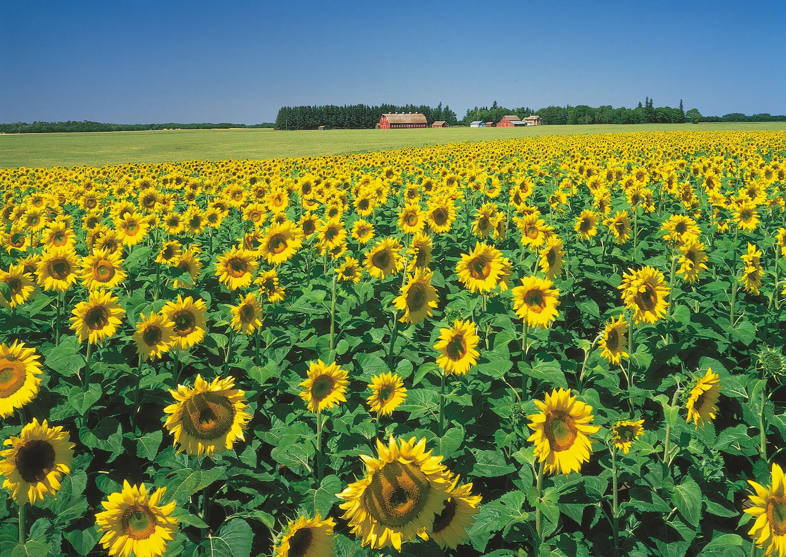
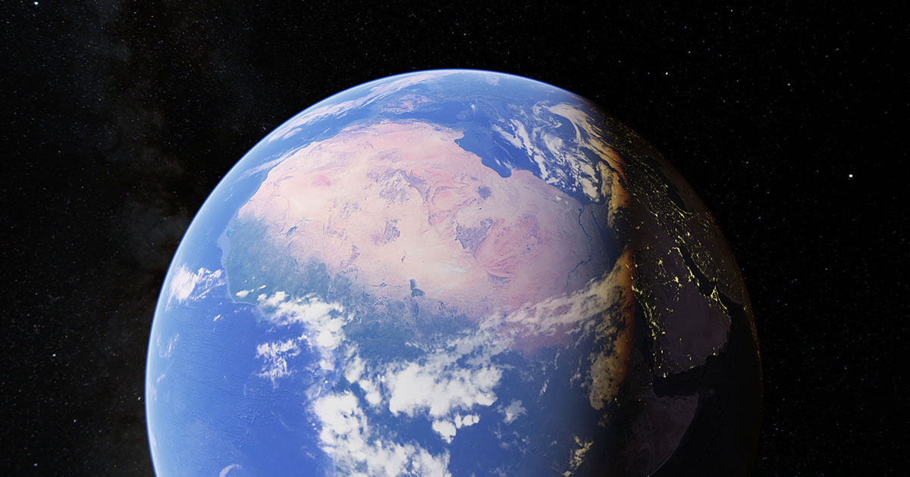
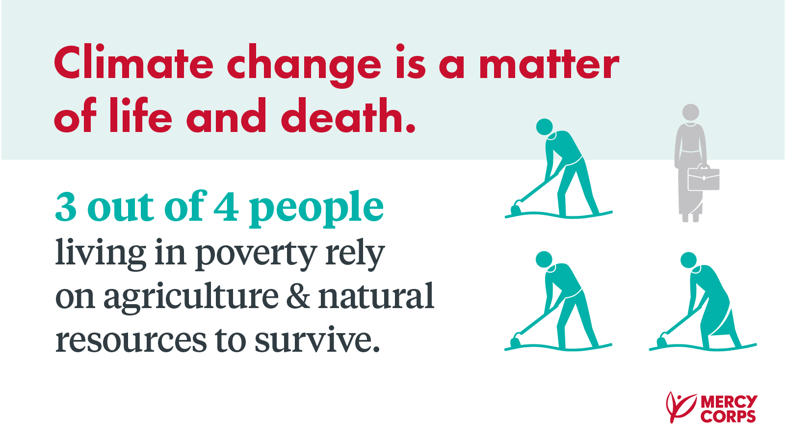
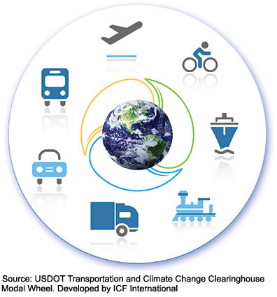
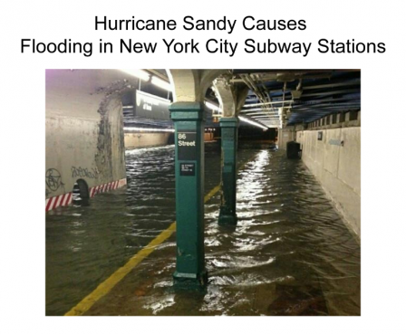

How Climate Change Effects On Human Like Us
Climate change effects us humans by worsening the air and water quality. It Also cause certain diseases.It can cause mental issues. It can cause damages to ecosystems and infrastructure. Drought can harm food production.
- More severe storms.
- Increased drought.
- A warming, rising ocean.
- Loss of species.
- Not enough food.
- More health risks.
- Poverty and displacement. 
How Climate Change Effects On Poverty
Climate Change can affect poverty by the next ten years.It can also make people migrate to their countries by 2050.103 million can be in poverty in the next ten years.Environmental problems cause more suffering among the poor: • overcrowded urban areas increase the risk of disease. shortages of wood for fuel and other uses make it more expensive to buy. soil erosion and deforestation cause declining crop yields. While average standards of living has risen, The gap between the very rich and the very poor has widened.Poor people and nations suffer the effects Of Environmental damage more severly than the rich.
How Can climate Change Effect The Economy
Climate change can effect the economy by Global warming will primarily influence economic growth through damage to property and infrastructure, lost productivity, mass migration and security threats. The balance between winners and losers turns increasingly negative as temperatures rise.Overall, climate change will harm the U.S. economy, even with modest amounts of warming. The U.S. economy would stand to lose between about 1 percent to 4 percent of GDP annually by the end of the century through effects to mortality, labor and the energy sector alone under a high emissions scenario.New York city has led to an urban heat island, which causes temperatures to be warmer overnight in all seasons.
How Can Climate Change Affect Transportation
How can climate effect trains?
Climate Change effects Transportation by more frequent and severe heat waves may require track repairs or speed restrictions to avoid derailments. Heavy precipitation could also lead to delays and disruption, and tropical storms and hurricanes can also flood or leave debris on railways, disrupting rail travel and freight transport.
Impacts on ice roads

Freezing temperatures are required for ice roads in Alaska. These are frozen routes used to connect northern communities, as well as the oil, gas, and mining industries. The tundra beneath these frozen roads is fragile, so transportation is limited to periods when the ground is frozen. Warming temperatures would reduce the number of days when ice roads are open, limiting transportation access to these areas.